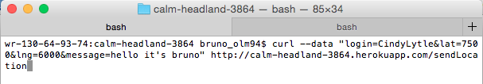

Security Assessment
Prepared by Bruno Olmedo 12/8/2015
Introduction
This assessment tests the security of the Server for Mapchat web application developed by Daniel Navon, as well as his Mapchat web application. According to the specifications he followed, The Server for Mapchat from Assignment 3 is a server-side web application that builds JSON-based API's. It receives requests in a specific format, stores them in a database, and responds with the data that it accumulates as it receives requests. It also offers a web interface where users can see all requests, or checkins, submitted, and where they can search for latest checkins by username. Mapchat sends a request to a server with the user's information and receives data in JSON format that it then displays on a map. The vulnerabilities in these applications make it unfit for public use. This document outlines a few problems and solutions.
Methodology
I tested all the code "black-box," working off of assumptions of what I believed might be wrong with the code using curl and found a couple vulnerabilities. Taking a look at the code that my partner gave me access to, I found the reasons why I was able to fudge with his program, and found more vulnerabilities. Dan made me a collaborator for his project on Heroku, so I tested directly through Heroku. I ran his mapchat code locally, though, to see if one of my hacks would break it (which it did).
Abstract of Findings
Dan forgot to NEVER EVER TRUST USER INPUT, which led to all the vulnerabilities I found in his web application. The application assumed there wouldn't be malicious intent from users, which, unfortunately, by human nature, there will always be. I was able to insert images into a checkin that was then displayed on his application. I was also able to make reqeusts/checkins using values for lat and lng that would crash applications that get their data from this server (i.e. mapchat). Also, the application is open to being overloaded with client requests to the point of crashing if someone is feeling malicious enough (DDoS). Proper security checks (that are mostly relatively simple) must be implemented to prevent attacks.
Issues Found
Cross-Cross-Site Scripting
- High: This is very bad. Applications that rely on the server to have the information correctly formatted could be affected by faulty, injected data, causing people to not trust and not want to use the application. Fortunately, there is a simple solution.
- Since the data submitted in the POST API is not escaped, Javascript or HTML can be inserted in place of a message, lat, or lng value, and a client's application would execute these injections if it does not include its own layers of security for escaping. Running the curl command below injected an image into the web interface of the server. Thankfully, in this case, the image is pleasing, but it could have been something very inappropriate.
- THERE IS MORE: I was also able to redirect the page to my favorite blog with this curl command. This worked if the redirect was in either the lat, lng, or message fields. Unless I manually clear it, now Dan's site redirects to a blog about cats and sexy men.
- The solution for this issue is not difficult to implement. Dan must escape the input before inserting it into the database. Characters that are especially threatening, such as the greater than and less than signs, should be escaped to their HTML counterparts. The code could also limit the characters that are allowed, having a filter for what can and cannot be inserted into the database.
Invalid Values
- Moderate: Inserting invalid values for lat and lng may result in applications getting their data from this server crashing if they don't have measures of checking the validity of the data received, which would make people not trust this server.
- When I was reading the code, I noticed Dan had not set limits for valid lat and lng inputs, so I tried submitting lat and lng values that are way out of what is realistic. His server took the values without any trouble. This means that if an application (i.e. mapchat) gets its location data from this server, it will not work (unless it has its own ways of verifying values in its code) because it will not be able to find latitudes and longitudes of the submitted values (7500, 6000).
- 
- This actually broke his mapchat when I tried to get the data from his server, as you can see below
- The solution to this problem is very simple. He just needs to add if statements that check the data before it is inserted into the database to make sure that the lat and lng values are valid. These if statements would set the upper and lower limits of the values that are allowed for lat and lng.
Mapchat takes Invalid Values
- High: If the data is not verified, the application is very likely to crash. It could also execute malicious injected inputs.
- One cannot trust anyone in the world of computer science. Servers, like the one being discussed, could send in invalid data that will crash the application. That's exactly what happened above. You can see in the code here that no measures were taken to verify the values of the lat and lng.
- The solution for this problem is also a series of if statements that check that the values lie within the boundaries of normal latitudes and longitudes on Earth.
DDoS
Conclusion
Issues with Mapchat and the Mapchat server make it easy to make both applications inoperable. The recommendations above should reduce the vulnerability of both applications to the basic attacks we've learned about. Most changes are easy to implement, the most difficult one being the prevention of DDoS attacks, which have become increasingly prominent and powerful. The basic fixes should be cheap to implement (~$500-$700). Preventing DDoS is much more complicated and costly. However, it's better to be safe than sorry, isn't that right, Sony?